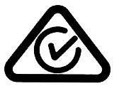

Quality & Safe Product Use · AU Regulatory Frameworks · Interview Trainer
Unified product testing & validation — certify before you supply
One protocol, three regulators: electrical safety (EESS), energy performance (GEMS/MEPS), fire protection (ActivFire). Every product follows the same spine — test reports, database registrations, labelling approvals — before commercial release.
How to use: pick a scheme tab, then click each stage of the compliance journey to drill down. Route a product through the Legrand catalogue, then test yourself in the quiz.
The 10-step launch gate
The full protocol, spoken as a ~2-minute interview answer: "When a new product comes from the factory, my first move is classification — I don't start any registration until I know which schemes it's caught by."
Classify under EESS. In-scope check: low voltage, 50–1000 V AC, household-type use. Then risk level via AS/NZS 4417.2 — Level 1, 2 or 3.
Test to the right standard. Applicable AS/NZS product standard through an ISO 17025-accredited lab; keep the test reports under document control.
Level 3? Get the Certificate of Conformity first. High-risk equipment can't be registered without a CoC from an accredited certifier. Track its expiry.
Confirm Responsible Supplier status. The AU entity holding the ABN that manufactures or imports must be registered, with an Authorised Officer declaration, renewed annually.
Register the equipment. Mandatory for Levels 2 & 3. For Level 3 the registration term (1/2/5 yrs) can't outlast the CoC.
Apply the RCM mark. Only after registration, per AS/NZS 4417 marking rules. The RCM also carries EMC obligations.
Build the compliance folder and SDOC. Supplier Declaration of Compliance cross-referenced to test reports, CoC and registration number — answer the regulator in days, not weeks.
Check GEMS. In a regulated product class (lighting, motors, appliances)? Verify MEPS per the Determination, register on the energy register, apply the label where required.
ActivFire, if fire-related. CSIRO scheme: Certificate of Conformity, register listing, Factory Production Control audits under the 2026 changes.
Ongoing control. Renewal calendar driven by CoC/registration expiries, standard-change monitoring — and any check-test failure flows straight into NCR/CAPA.
🔑
The golden rule: nothing is supplied until it's registered, marked and declared. The two orderings interviewers probe: registration comes BEFORE supply, and Level 3 needs its CoC BEFORE registration.
⚡ EESS — Electrical Equipment Safety System
AU/NZ electrical safety (plus EMC) for in-scope equipment: low-voltage (50–1000 V AC / 120–1500 V DC) gear designed for household or similar use. Run by state regulators under the national framework (ERAC).
Scope check & risk classification
Two questions decide everything: is it in-scope (voltage + household-type use), and what's its risk level? The use and voltage decide it — not the brand. A product used in a home is household-type even if sold to a business.
Level 1 · Low
Self-declared
No registration needed — but must still carry the RCM mark. Lamps/bulbs, computers, monitors, printers, audio, telecoms.
Level 2 · Medium
Registered
Registered on the national database by a Responsible Supplier; keep a compliance folder (test reports) ready for regulators. Kettles, toasters, fans, luminaires, hair dryers.
Level 3 · High
Certified + registered
Certificate of Conformity from an accredited certifier is mandatory before registration. Plugs, socket outlets, power boards, battery chargers, portable tools.
Test to the matching product standard at a NATA/ILAC/CBTL lab. Sydney loop: EMC Technologies (Seven Hills — safety + EMC), Austest Laboratories (CB scheme).
The CoC expiry date is the anchor for the registration term
Certifier work is done remotely — physical proximity doesn't matter; lab proximity does
Ordering trap: CoC comes BEFORE registration. Say it the right way round in the interview.
Registration
Two registrations: the Responsible Supplier (the ABN entity that manufactures/imports, with an Authorised Officer declaration, renewed annually) and the equipment (Levels 2 & 3) on the national EESS Registration Database.
Level 3 registration term: 1, 2 or 5 years — cannot outlast the CoC expiry
Level 3 certificate details upload to the National Certification Database
New consolidated EESS platform launched Dec 2024 at eess.gov.au
Marking — the RCM
RCM — Regulatory Compliance Mark
Triangle + tick. Applied only after registration (AS/NZS 4417). Carries both electrical safety (EESS) and EMC (ACMA) obligations.
Release & declare
Compile the SDOC (Supplier Declaration of Compliance) cross-referenced to test reports, CoC and registration number, held in the controlled document system. Regulator asks → answer in days.
Compliance folder available to regulators, typically within 10–14 days if requested
Gate the release: no registration, no mark, no supply
Ongoing — and the NSW dual track
Renewals, certifier surveillance audits, standard-change monitoring — and the Sydney-specific nugget that builds instant credibility:
NSW runs its own approval system (66 declared classes) alongside the national EESS. Fair Trading gazettes REAS certifiers; there's a separate NSW Approved Electrical Articles register
Since 13 Nov 2020 a REAS approval can no longer authorise the national RCM — new models get the REAS mark (ABC-xxxxxx-EA, e.g. SAA-2024-001-EA)
One test report → two applications → two marks: RCM nationally + NSW approval mark in NSW
Penalty for selling unapproved declared articles in NSW: up to $825,000 for corporations
Where compliance dies: change control — a cheaper capacitor or a factory move voids the certificate. Re-assess before the change ships.
🔌 GEMS/MEPS — Greenhouse & Energy Minimum Standards
National energy-efficiency law (GEMS Act 2012, Cth) enforced by the GEMS Regulator. MEPS = minimum energy performance standard per product class. The mental model: a tax authority — you declare compliance with a lab's evidence, and the regulator audits you after the fact.
Is the SKU in a regulated product class?
Each class is governed by a GEMS Determination (a legislative instrument). Products can't legally be supplied in Australia without registration.
Household: fridges, air conditioners, washers, dishwashers, dryers, TVs, LED/CFL lamps, water heaters
IT/standby: computers, monitors, external power supplies, set-top boxes
Commercial/industrial: three-phase motors, distribution transformers, refrigerated display cabinets, pool pumps
Fresh example: LED Lamps Determination 2025 — MEPS in force from 3 Mar 2026
Rule of thumb: "anything that consumes significant energy" — check the regulated class list; motors and transformers count even in factories.
Testing — the lab you commission
You choose and pay an accredited lab (NATA / ISO 17025 / ILAC-MRA). It runs the test method from the Determination. Sydney: CHOICE Test Research (NATA #1702 — fridges, washers, TVs), EMC Technologies Seven Hills (ACs, motors, lighting, external power supplies), Comtest (standby power, monitors).
Annual energy consumption (AEC), standby power (≤1 W limits), COP/EER for ACs
LED lamps: luminous efficacy + 3,600-hour lumen-maintenance endurance
Motors: efficiency to IEC 60034-2-1
Report includes star-rating calculations + uncertainty budget
No certifier — by design
There is no certifier in GEMS. The test report is your evidence; the regulator trusts your declaration — and check-tests you afterwards, like a tax authority. This contrasts with EESS L3 and ActivFire, where an independent body pre-approves you.
Account on the Energy Rating Product Registration system (reg.energyrating.gov.au) as the AU entity with the ABN
Upload test report + product docs (specs, model list, label artwork)
Fee ~$440–780 per application · assessment up to 42 days · valid generally 5 years
Family registrations use the representative / worst-case model
Annual compliance report: units sold per registered model, by 31 October each year
Marking — the energy rating label
Energy Rating Label (stars)
On labelling classes, matching the registered data. MEPS-only products (e.g. motors) have no label — registration itself is the requirement.
Regulator check-testing — your post-launch exposure
The GEMS Regulator selects ~60–70 models per year using a risk-based approach (compliance history, product class, lab used). Products are bought off the market or demanded from you.
Stage 1: regulator tests against the registered standard
Stage 2 (if Stage 1 fails): further testing at your expense — labelling: 3 units, average must pass · performance: 2 units (3rd only if one fails), majority must pass
Both fail: registration cancelled — the model can't be supplied, sibling models sharing the test report also cancelled, fines (~60 penalty units ≈ $12,600 + daily penalties), published suspension list
Your move: quarantine stock → root cause → CAPA → re-test → re-apply; link it to warranty exposure (non-compliant units in the field = recall risk)
Leverage point: keep the registered test reports, sample records and label data consistent with actual production — a check-test replicates your registered claim, not your current spec.
🔥 ActivFire — fire performance (CSIRO)
CSIRO's product certification scheme for active fire protection — anything that detects or suppresses fire. Governed by AF-D001 Rules; verified against AS standards plus CSIRO Technical Specifications.
CSIRO issues a Verification Plan (AF-D001) naming the applicable AS standard / TS, test agency and fees
Rule of thumb: "anything that DETECTS or SUPPRESSES fire"
Testing — and scheme witnessing
Standards: AS 3786 (smoke alarms, 2023 ed. per TS-007), AS 7240 (detection), AS/NZS 1841 (extinguishers), AS 2118 (sprinklers), plus CSIRO TS-007/TS-016/TS-027…
Labs: CSIRO Fire Systems Lab Clayton VIC; CSIRO Fire Technology Lab North Ryde (closing mid-2027 — scheme unaffected)
Since Jan 2026 (AN-020): fire tests for suppression are SCHEME-WITNESSED — no more direct acceptance of third-party certification
CSIRO Verification Services is the scheme operator and the only certifier. Certificates of Conformity are issued per agent/distributor.
Registration & marking
Products listed on the public ActivFire Register of Fire Protection Equipment
No RCM here — the ActivFire certificate/listing is the mark; labels & manuals per Advisory Note AN-014
Ongoing — FPC audits (the 2026 change)
Advisory Note AN-020, effective 1 Jan 2026, changed the scheme's rhythm:
FPC (Factory Production Control) audits introduced for detection/suppression — very ISO 9001-flavoured factory audits (your QMS internal-audit program maps straight on)
Scheme witnessing of fire tests (above)
Audits extended progressively to existing certified products, not just new ones
Interview line: "AN-020 brought ActivFire into an ISO 9001 world — FPC audits, witnessed tests, change verification. That's exactly the discipline I run."
🗄️ Data Centre Router — Legrand products
Route a Legrand product through the frameworks. Click a product to see its compliance path. Grey-space = power infrastructure; white-space = IT equipment. Where scope is genuinely arguable, the router says check — in an interview, knowing what to check beats guessing.
✅ Route the product — quiz
Six scenarios from the interview playbook. Answer, read the reasoning, watch the score. Restart any time.
Score: 0 / 0
🏷️ Real Marks — what they actually look like
The three marks that end up on the product or packaging, from official sources. Learn the look, the placement rules and the one-line purpose of each — interviewers describe marks and expect recognition.
RCM — Regulatory Compliance Mark

Triangle + tick — applied only after registration
Placement: external surface, near model identification, durable & legible; min 3 mm high (AS/NZS 4417.1)
Covers electrical safety (EESS) + EMC/telecoms (ACMA) in one mark
Mandatory from 1 Mar 2016 — replaced the old C-Tick / A-Tick
If not practical on the product: packaging/documentation, or electronic display
Recognition drill: triangle+tick = national RCM (safety+EMC) · red-arc star label = GEMS energy · flame wordmark = ActivFire fire certification. If the interviewer asks "where does each mark go?" — RCM: on the product near the model number; energy label: on the product (and its packaging for online sales); ActivFire: on the product label per AN-014.
🔤 Acronyms — the full alphabet of the job
Every acronym used across this trainer and the interview prep notes. Bonus: TÜV pronunciation, because saying it wrong in a room of engineers is avoidable.
Marks & approvals
RCM
Regulatory Compliance Mark — national mark (triangle + tick), applied after EESS registration; covers electrical safety + EMC (ACMA).
REAS
Recognised External Approval Scheme — NSW Fair Trading's program recognising external certifiers for declared articles.
RECS
Recognised External Certification Scheme — the national EESS equivalent: certifiers recognised to issue Level 3 certificates.
CoC
Certificate of Conformity — issued by a certifier (EESS L3, JAS-ANZ bodies) or CSIRO (ActivFire).
CoA
Certificate of Approval — the NSW declared-article approval document (Fair Trading or REAS certifier).
EEA1
The NSW application form for electrical article approval (form name, not an acronym).
ABC-xxxxxx-EA
NSW REAS approval mark format — certifier prefix + number + "EA" (e.g. SAA-2024-001-EA).
NSWxxxxx
NSW Fair Trading's own approval number format when FT approves directly.
Schemes & regulators
EESS
Electrical Equipment Safety System — national AU/NZ electrical safety framework.
GEMS
Greenhouse and Energy Minimum Standards — national energy-efficiency law (GEMS Act 2012).
MEPS
Minimum Energy Performance Standards — the performance floor per product class under a GEMS Determination.
E3
The Energy Rating Product Registration system — "E3" database (reg.energyrating.gov.au).
ERAC
Electrical Regulatory Authorities Council — the state/territory + NZ regulators running EESS.
ACMA
Australian Communications and Media Authority — EMC/radiocommunications obligations behind the RCM.
DCCEEW
Department of Climate Change, Energy, the Environment and Water — home of the GEMS Regulator.
CSIRO
Commonwealth Scientific and Industrial Research Organisation — runs the ActivFire scheme via Verification Services.
Uninterruptible Power Supply / Power Distribution Unit / Keyboard-Video-Mouse — the data-centre power & IT trio.
GWP / NCC
Global Warming Potential (refrigerants) / National Construction Code (fire-rating & building compliance).
OCP
Open Compute Project — the open-source data-centre hardware standard behind "OCP racks" (Minkels).
AS/NZS
Australian/New Zealand Standard — the joint standards prefix (e.g. AS/NZS 4417.2, AS/NZS 60335.1).
🧪 ISO standards — the family that runs the job
The job ad names ISO 9001 and ISO 17025 explicitly ("formal audit training", "ISO 17025 highly regarded"). This tab covers the star of the show — ISO/IEC 17025 — then every other ISO/IEC standard that can come up in the interview.
⭐ ISO/IEC 17025:2017 — the main standard for lab competence
The international standard that proves testing and calibration laboratories operate competently and generate valid results. When NATA accredits a lab, it accredits it to ISO/IEC 17025. In Australia the labs you commission — EMC Technologies, Austest, CHOICE, Comtest, CSIRO — all work under it.
Why a Quality & Product Compliance Manager lives on it
Choosing labs: only commission ISO 17025-accredited labs (NATA in AU, IANZ in NZ) — Level 3 EESS evidence must come from one
Judging reports: an accredited report carries the NATA/ILAC endorsement and a signatory — the anatomy table below is your checklist
Cross-border evidence: ILAC MRA means a report from an accredited lab in another country is recognised here
Defending evidence: the compliance folder you hand a regulator is only as strong as the lab behind it
Your digital QMS, AI tools and compliance databases live under it
ISO 22301:2019
Business continuity management
Supply chain continuity — relevant to "raw material supply continuity" claims
ISO/IEC 42001:2023
AI management systems
Newest kid — impressive to name when discussing your AI-in-QMS work
ISO 17020:2012
Inspection body competence
Inspection schemes on your resume — cite if inspection verification comes up
🧠
Interview line that ties it together: "ISO 9001 is the house we live in, ISO/IEC 17025 is the standard of the labs whose evidence we trust, and ISO 19011 is the discipline of how we audit both. The compliance folder is only as strong as the weakest certificate in it."
📚 Cheat sheet
Six checkpoints, one master table, and the marks. For the 60 seconds before the interview.
The six checkpoints
In scope? EESS in-scope check (50–1000 V AC, household-type) · GEMS product class check · fire-related → ActivFire
Risk level — AS/NZS 4417.2 → L1 / L2 / L3
Evidence — ISO 17025 test reports to AS/NZS standards; L3 = CoC from an accredited certifier
Registration — Responsible Supplier (annual, ABN) + equipment registration (L2/L3 mandatory; L3 term tied to CoC expiry)
Marking — RCM after registration; GEMS energy label where required
Electrical safety + EMC of low-voltage household-type equipment
Energy efficiency of appliances/equipment
Active fire protection products
Who runs it
State regulators (ERAC)
GEMS Regulator (DCCEEW, Cth)
CSIRO Verification Services
Law / rules
State electrical safety legislation; EESS rules
GEMS Act 2012 + Determinations
AF-D001 Scheme Rules + AS standards
Registration
Mandatory L2/L3 before supply
Mandatory before supply
Mandatory CoC before supply
Register
EESS Registration Database (national)
Energy Rating Product Registration ("E3")
ActivFire Register of Fire Protection Equipment
Mark
RCM
Energy Rating Label (stars) on labelling classes
ActivFire certificate (listing), labels per AN-014
Certifier
Third-party JAS-ANZ certifier (L3 only)
None — regulator direct (self-register)
CSIRO itself
Renewal
RS: annual · equipment: 1/2/5 yrs tied to CoC
~5 years per model; annual unit-sales report by 31 Oct
Surveillance + FPC audits (new from Jan 2026)
Post-launch
Market surveillance; NSW dual-track (REAS marks)
Risk-based check-testing ~60–70 models/yr; Stage 2 at your cost
Batch sampling; product-change verification
⚡
Certify-then-supply — EESS L3 & ActivFire: an independent body pre-approves you. Certificate before supply.
🔌
Declare-then-supply — GEMS: you self-certify with an accredited lab's report; the regulator audits you after, like a tax authority.
⚠️
The three things interviewers probe: ① change control is where compliance dies — a cheaper component or a factory move voids the certificate. ② You're answerable to the regulator after launch, not the certifier. ③ Renewals across a large SKU portfolio are a system (master compliance register driving the audit calendar), not a memory.